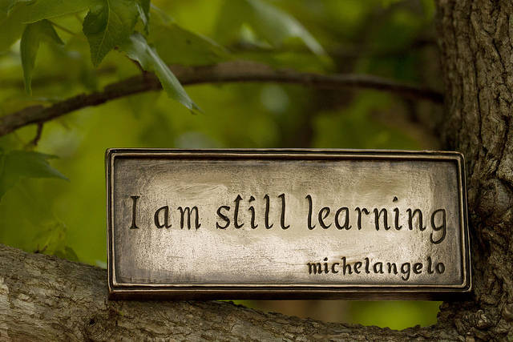

Learning Your First Programming Language
If the idea of designing software intrigues you; then you’re in the right place. Often times the things that keeps you from moving forward is the “fear of the unknown”, or simply doubting your ability/capacity to learn. If programming looks like some big ominous thing and like it’s more trouble than it’s worth, then you need to know you’ve got a case of the “stinking thinking” (Zig Ziglar).
When it comes to our own mind the things we can learn are often determined by our perception of it. If you think it’s impossible, then “for you” it is, because you’ve created a mental barricade against it. But if you choose to believe it should be easy, then you’ve opened yourself to accepting new concepts which will help you learn.
What to look for when choosing a language to learn
If you aren’t stuck in a one language situation, then you should consider a language that has simple syntax. When I say syntax I’m referring to both it’s structures and the symbols used through out the language. When you first start to learn something like $: << ‘.’ will look so foreign you may want to run. So my first recommendation in picking a language to learn is one with friendly syntax.
Next is community. You want to be able to connect with a friendly community that’s more than glad to help with any questions you may have. Over the years many communities have grown around various computer programming languages. It is easier to find communities online now than ever before. It’s not a great idea to go to each community and ask what’s the easiest language to learn… they will be biased to their own preference. You’ll be better off asking them about their experience with the community of people within the language. How helpful are people generally and how passionate are they about sharing knowledge of the language.
The last major thing to consider when picking a language is you intended target audience for software. If you have a target demographic, by which I mean hardware/software demographic, then that may really narrow down the languages you have to learn. When you get into proprietary(not a work everywhere kind of system) systems, then they have specific requirements for their design and implementation. So this is a potential big concern in picking the language. But I don’t advise this as a first language consideration as you may choose a difficult path.
My primary concern when you look to choose a language to learn is that you find the path of least resistance with the most wins. When you start coding and it works; it’s very rewarding. And when the community is there to share with this joy that’s another win. Our mind is stimulated by wins and our memory retains things we learn through the wins. With positive forward momentum you maximize your learning and sticking with software development.
You don’t want to be in a lifestyle pattern of quitting. You may already have walked down this path. But know that you can discipline yourself into a person of character and wisdom who will discern the path forward. This is a big reason to look for simplicity, beauty even, in a language. Whenever attacking something big and complicated it’s best to simplify it.
Algebra
When going through school in mathematics you eventually get to a course called Algebra. Here they introduce a concept where you assign number values to letters. When you first see this it takes a little bit to wrap your head around. But this is indeed a simple concept and a fundamental building block. If I tell you “the value of x is 4” and I write x = 4 and then I ask you to tell me what x is, you should say 4. Once you say this out loud you’ve started to grasp the concept. Now I change x and I tell you “the value of x is 9” (x = 9). And when I ask you what is x you should have now changed in your mind what x is from 4 to 9 and you say 9. This is the next step into grasping the concept as now you become aware that letter x can change in value. It will not eternally be the value 4, but can be any value we set it as. This concept you’re taught in high school Algebra is the fundamental building block in which programming languages work and build upon.
Variables
When you start to learn programming you’re introduced to the word “variables”. This is basically the word for what you where doing in Algebra with “the value of x is 4”. In this case x would be a variable. If you need to wrap your mind around it; think of it this way: Letters like x are able to vary. So they can be changed to most anything you set it to.
One key difference between setting a value in Algebra and variables in programming is that with programming you can use a group of letters. For example I can set the value to the word quantity to 4: quantity = 4. I can even shorten it to a few letters and do the same thing qty = 4.
If you’re familiar with Algebra, there is one algebraic syntax that you won’t be using in most programming languages. In Algebra if you set x = 4 and then you do x6 what this means in Algebra is multiplication. So in Algebra it becomes “the value of x times 6”. This isn’t how multiplication is done in any programming languages that I’m aware of, so you can keep that in mind with this example: x=4 and y=6 what is xy. In Algebra xy here is multiplication of the value of x and y. In programming xy is nothing yet as you have not yet created this variable. Remember in programming you can use a string of characters to set a value people = 12. So this is why you don’t multiply joined letters p*e*o*p*l*e within programming languages.
Example Language Variables
Now lets look at beauty and simplicity in setting a variable. This may be helpful to you for finding a language with the path of least resistance. But I highly recommend you look at a few more language examples as this is not the definitive example. I will use the word apples and the value 4 for these examples.
Assembly
apples db 4
Java
public class Orchard {
public int apples = 4;
}
Python
apples = 4
Ruby
apples = 4
JavaScript
var apples = 4;
Scala
var apples = 4;
Haskell
apples = 4
C++
int apples = 4;
Summary
There are far too many languages to include here. It’s probably a disservice of me to include some and exclude others. So I’m not going to say these are all you have to pick from. But this is a glance at some of the basic syntax languages use for simply setting the value of a variable.
I can say that an interpretive language may be easier to start learning with. What that means is that when you write the code it will run right away so you can see if it works. The alternative is a compiled language. Compiled languages have to take the code you’ve written and first translate it into machine code before you can run it.
Of the languages I’ve listed here I have not tried Haskell. And some other languages I have tried include qBasic and the D language. qBasic was my first introduction into programming languages. But Python was where I learned by leaps and bounds. I have since switched to mostly programming in Ruby. And I must say I’m quite happy with both it and with the Ruby community. It is a place that very much feels like home.
As always I hope my writing was both informational and enjoyable. Please comment, share, subscribe to my RSS Feed, and follow me on twitter @6ftdan!
God Bless!
-Daniel P. Clark
Image by Anne Davis 773 via the Creative Commons Attribution-NonCommercial 2.0 Generic License.